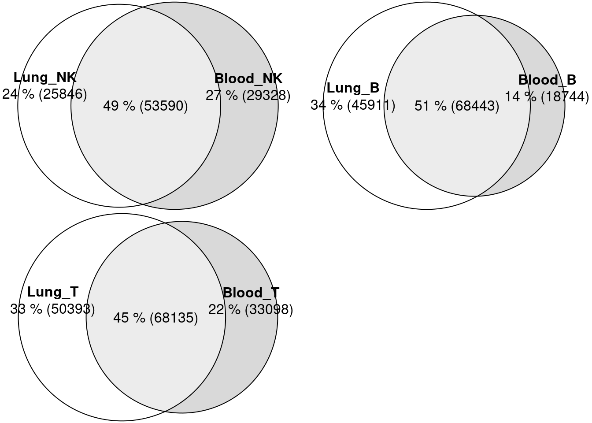
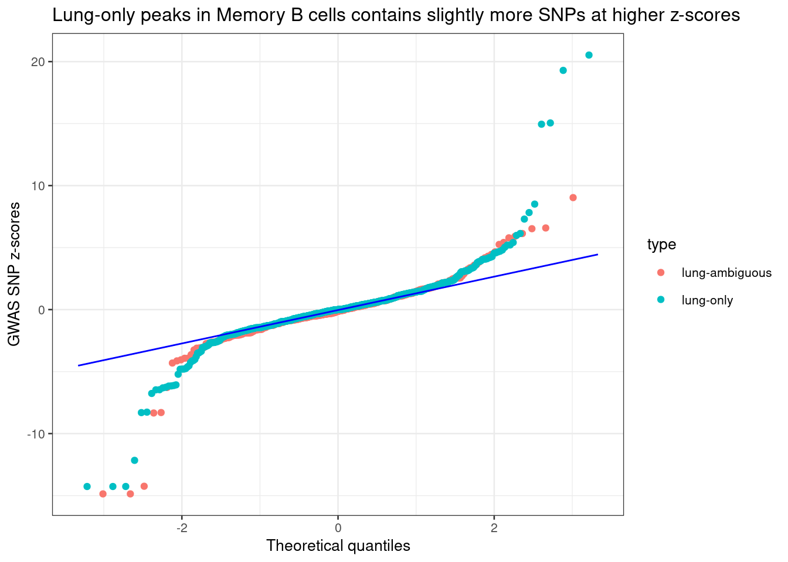
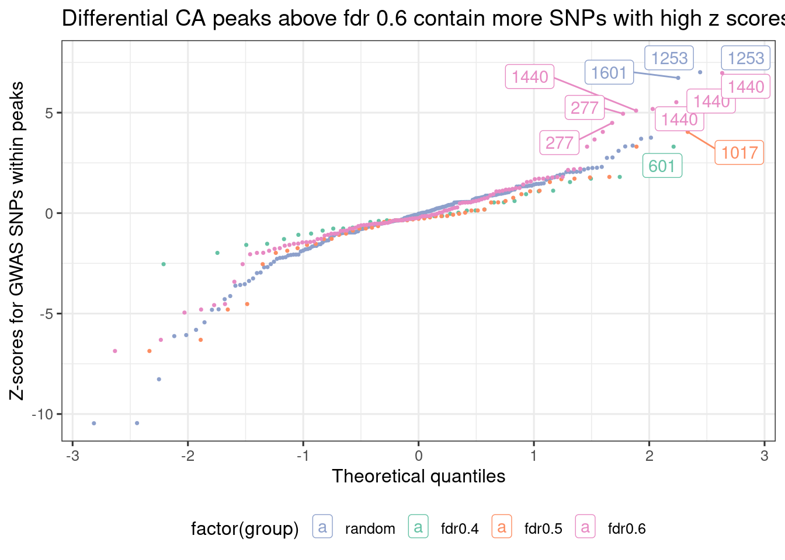

Converging heritability and differential accessibility analyses
2025-04-22
Last updated: 2025-05-08
Checks: 7 0
Knit directory: lung_lymph_scMultiomics/
This reproducible R Markdown analysis was created with workflowr (version 1.7.1). The Checks tab describes the reproducibility checks that were applied when the results were created. The Past versions tab lists the development history.
Great! Since the R Markdown file has been committed to the Git repository, you know the exact version of the code that produced these results.
Great job! The global environment was empty. Objects defined in the global environment can affect the analysis in your R Markdown file in unknown ways. For reproduciblity it’s best to always run the code in an empty environment.
The command set.seed(20221229) was run prior to running
the code in the R Markdown file. Setting a seed ensures that any results
that rely on randomness, e.g. subsampling or permutations, are
reproducible.
Great job! Recording the operating system, R version, and package versions is critical for reproducibility.
Nice! There were no cached chunks for this analysis, so you can be confident that you successfully produced the results during this run.
Great job! Using relative paths to the files within your workflowr project makes it easier to run your code on other machines.
Great! You are using Git for version control. Tracking code development and connecting the code version to the results is critical for reproducibility.
The results in this page were generated with repository version 4ae1c3f. See the Past versions tab to see a history of the changes made to the R Markdown and HTML files.
Note that you need to be careful to ensure that all relevant files for
the analysis have been committed to Git prior to generating the results
(you can use wflow_publish or
wflow_git_commit). workflowr only checks the R Markdown
file, but you know if there are other scripts or data files that it
depends on. Below is the status of the Git repository when the results
were generated:
Ignored files:
Ignored: .RData
Ignored: analysis/.RData
Ignored: analysis/.Rhistory
Untracked files:
Untracked: ArchRLogs/
Untracked: Rplots.pdf
Untracked: analysis/.ipynb_checkpoints/
Untracked: analysis/ArchRLogs/
Untracked: analysis/GOBP_B_CELL_ACTIVATION_INVOLVED_IN_IMMUNE_RESPONSE.v2024.1.Hs.gmt
Untracked: analysis/Rplots.pdf
Untracked: analysis/cross_tissue_DE_u19_k10_fastTopics.Rmd
Untracked: analysis/differential_gene expression_u19.Rmd
Untracked: analysis/differential_peak_analysis.Rmd
Untracked: analysis/full_atac_h2g_enrichment.Rmd
Untracked: analysis/identify_T_subsets.Rmd
Untracked: analysis/identify_batch_effects_full_atac_k8.Rmd
Untracked: analysis/linking_lung_celltype_OCRs_with_asthma_genetics_archive.Rmd
Untracked: analysis/lung_specific_peaks_vs_DA_analyses_v2.Rmd
Untracked: analysis/run_fastTopics.R
Untracked: analysis/run_fastTopics_lungOnly.R
Untracked: analysis/test.Rmd
Untracked: analysis/test.pdf
Untracked: analysis/test_GO_enrichment.ipynb
Untracked: analysis/test_differential_accessibility_MAST.ipynb
Untracked: analysis/u19_atac_fastTopics.Rmd
Untracked: analysis/u19_full_atac_fastTopics.Rmd
Untracked: analysis/u19_full_atac_fastTopics_k10.Rmd
Untracked: analysis/u19_full_atac_fastTopics_k8.Rmd
Untracked: analysis/u19_lung_atac_fastTopics_no_correction.Rmd
Untracked: analysis/u19_regulon_enrichment.Rmd
Untracked: analysis/ukb-a-446.log
Untracked: analysis/ukb-a-446_GO_immune.log
Untracked: code/.ipynb_checkpoints/
Untracked: code/archR/
Untracked: code/compute_pancreas_factors.R
Untracked: code/link_variant_to_function.R
Untracked: code/make_plots.R
Untracked: code/munge_gwas_sumstats.sh
Untracked: code/run_GO_enrichment.R
Untracked: code/run_MAST.R
Untracked: code/run_fastTopics.R
Untracked: code/run_magma.sh
Untracked: code/run_magma/
Untracked: code/run_topic_DE_analysis.R
Untracked: ctwas_m6a_joint_m6a_PIP_0.8_genes.txt
Untracked: data/CRE_0_asthma_fine-mapping_summary.RDS
Untracked: data/CRE_0_asthma_fine-mapping_summary.RData
Untracked: data/CRE_0_asthma_fine-mapping_summary.csv
Untracked: data/CRE_0_asthma_fine-mapping_summary.txt
Untracked: data/DA_peaks_Tsub_vs_others.RDS
Untracked: data/DA_peaks_by_cell_type.RDS
Untracked: data/Tsuo2022_meta_analysis_asthma_risk_genes.csv
Untracked: data/annotated_scRNA_data.RDS
Untracked: output/annotation_reference.txt
Untracked: output/cross_celltypes_edgeR.RDS
Untracked: output/fastTopics
Untracked: output/homer
Untracked: output/ldsc_enrichment
Untracked: output/lung_Th17_dispersion_plot.pdf
Untracked: output/lung_immune_atac_peaks_high_ePIPs.RDS
Untracked: output/lung_specific_p2g_CD4_T.txt
Untracked: output/lung_specific_p2g_CD4_T_all.txt
Untracked: output/lung_specific_p2g_CD8.CD4.txt
Untracked: output/lung_specific_p2g_CD8.CD4_T.txt
Untracked: output/lung_specific_p2g_CD8_T.txt
Untracked: output/lung_specific_p2g_GO.RDS
Untracked: output/lung_specific_p2g_Memory_B.txt
Untracked: output/lung_specific_p2g_NK.txt
Untracked: output/lung_specific_p2g_Naive_B.txt
Untracked: output/lung_specific_p2g_Treg.txt
Untracked: output/lung_specific_peak2genes.RDS
Untracked: output/positions.bed
Untracked: output/u19_analysis
Untracked: output/u19_output
Untracked: test.html
Untracked: test.pdf
Unstaged changes:
Modified: analysis/U19_motif_analysis.ipynb
Modified: analysis/cross_tissue_DE_u19_fastTopics.Rmd
Modified: analysis/differential_peak_analysis_u19.Rmd
Modified: analysis/gene_set_analysis_for_RNA_topics.Rmd
Modified: analysis/h2g_enrichment_u19.Rmd
Modified: analysis/identify_batch_effects_full_atac.Rmd
Modified: analysis/identify_batch_effects_multiomics.Rmd
Modified: analysis/identify_regulatory_programs_u19_GRN.Rmd
Modified: analysis/linking_lung_celltype_OCRs_with_asthma_genetics.Rmd
Modified: analysis/rank_TFs_from_pairwise_comparison.ipynb
Deleted: analysis/test_magma.Rmd
Modified: analysis/u19_h2g_enrichment.Rmd
Modified: analysis/u19_lung_atac_fastTopics.Rmd
Modified: analysis/variants_to_function_u19.Rmd
Deleted: code/run_fastTopic.R
Deleted: lung_immune_fine_mapping.Rproj
Note that any generated files, e.g. HTML, png, CSS, etc., are not included in this status report because it is ok for generated content to have uncommitted changes.
These are the previous versions of the repository in which changes were
made to the R Markdown
(analysis/lung_specific_peaks_vs_DA_analyses.Rmd) and HTML
(docs/lung_specific_peaks_vs_DA_analyses.html) files. If
you’ve configured a remote Git repository (see
?wflow_git_remote), click on the hyperlinks in the table
below to view the files as they were in that past version.
| File | Version | Author | Date | Message |
|---|---|---|---|---|
| Rmd | 4ae1c3f | Jing Gu | 2025-05-08 | updated QQ plot |
| html | d50372b | Jing Gu | 2025-05-08 | Build site. |
| Rmd | 1f6073b | Jing Gu | 2025-05-08 | understand enrichment results |
| html | 9daf69a | Jing Gu | 2025-05-08 | Build site. |
| Rmd | 582e663 | Jing Gu | 2025-05-08 | wflow_publish(c("analysis/lung_specific_peaks_vs_DA_analyses.Rmd")) |
| html | e849411 | Jing Gu | 2025-04-23 | Build site. |
| Rmd | ac59580 | Jing Gu | 2025-04-23 | bias in peak calling |
| html | bfd99ec | Jing Gu | 2025-04-23 | Build site. |
| Rmd | 7102fb6 | Jing Gu | 2025-04-23 | bias in peak calling |
| html | a4592e7 | Jing Gu | 2025-04-23 | Build site. |
| Rmd | ffabeb8 | Jing Gu | 2025-04-23 | bias in peak calling |
Objectives
The objective is to understand why lung-specific peaks in enrichment results do not show differential accessibility. What drives the differences in heritabiltiy enrichment between tissues? We have several hypotheses as below.
- Peak calling may be too conservative for spleens
- peak calling p-value threshold: 0.1
- Similar percent of unique peaks called in spleen and lung for NK and B
- Much lower percent for T cells due to low number of T cells in spleens
- Ignoring donor variability in calling peaks over pseudobulks
- Batch effects can potentially cause spurious peaks
- ArchR creates pseudo-replicates and call peaks in a sample-aware manner
- Peaks do not pass FDR threshold with multiple testing burdens in differential analyses
Method
We will use some positive controls to test these hypotheses: 1) Lung peaks with high peak calling scores 2) Lung peaks that contain GWAS SNPs for childhood-onset asthma with high z scores
Results
Summarizing peaks called in each tissue
Lung immune cells have lower fraction of peaks overlapped with blood than with spleen immune cells.
Lung vs. Spleen

Lung vs. Blood
Lung and Blood peaks were called by different procedures. Lung peaks have fixed size (500bp), while blood peaks have sizes ranging from 200 to 5K bp. To make comparison, I first made a union set of peaks and then comparing peaks from each tissue against the union set.

Checking differential CA results for top peaks called only in lungs
*CA: chromatin accessibility
Preparing positive control peaks
top 5 lung-specific peaks ranked by peak calling significance
Selected cell types:
- B (Memory_B)
- T (CD8+ T)
From the table of differential peak analyses, we see the five peaks only called in lung memory B cells with high quality do not have large fold change compared with spleen, and did not pass p-value thresholds. Noticeably, all five peaks have decent number of read counts in spleen, but they were missing in peak calling for spleen samples.
Loading required package: edgeRLoading required package: limma
Attaching package: 'limma'The following object is masked from 'package:BiocGenerics':
plotMA logFC logCPM F PValue
109120 -0.05184564 3.888861 0.1740904 0.78953868
191182 0.07945834 4.489175 0.6692661 0.41847111
25479 0.09573716 3.775123 0.4308406 0.51558103
62816 -0.04144102 5.143313 0.3323839 0.79223709
14742 0.16853851 4.445024 3.1665440 0.08326005
| Version | Author | Date |
|---|---|---|
| 9daf69a | Jing Gu | 2025-05-08 |
From the table of differential peak analyses, we see the five peaks only called in lung CD8_T cells with high quality did not pass p-value thresholds. Three out of two peaks have comparable or higher mean reads in spleen, but they were missing in spleen.
logFC logCPM F PValue
198930 -0.1076247 4.648426 0.50855795 0.48138003
13336 0.1210320 4.167066 0.44920240 0.50793886
179651 5.9207691 1.575136 4.21681589 0.06188397
84783 0.3286604 2.323882 0.06753748 0.79924828
123952 0.1494897 3.231486 0.27642318 0.60322072
| Version | Author | Date |
|---|---|---|
| 9daf69a | Jing Gu | 2025-05-08 |
Reviewing peak calling process
ArchR makes pseudo-bulk replicates for each cell grouping (cell-type) by sampling cells and then pooling the data from each single cell. With the pseudo-bulk replicates generated, ArchR call peaks for each cell group with MACS2 in a sample-aware manner. Basically, for each cell group, ArchR generates a list of peak summits with genomic positions and score values using 5 pseudo-bulk replicates, and then extends 250 bp from each summit to define peaks, which results in fixed length of 501 bp. The peaks called from each replicate can overlap with each other, so ArchR performs two rounds of filtering to generate non-overlapping peaks: 1) removal of peaks overlapping within each replicate 2) remove of peaks overlapping across replicates. Lastly, ArchR retain peaks with at least 2 pseudo-bulk replicates and above the numeric significance cutoff for peak scores (0.1).
Factors contributing to peaks not called in spleen
Out of 17.8K peaks only called in lung Memory B cells, ~ 70% (12.8K) peaks were found to overlap with peaks originally called in spleen Memory B replicates. Half peaks were not detected in at least two replicates, while the other half were filtered out during the process of removing overlapped peaks.
The genome tracks for top peaks overlapped with more than two spleen replicates show that the peaks at center (lung-specific) have stronger peaks nearby.
[1] "Number of peaks specifically called in spleen Memory B replicates:" Sample nPeaks
1 Rep1 5835
2 Rep2 5877
3 Rep3 3429
4 Rep4 4940
5 Rep5 7021
CD8_T cells
Out of 23K peaks only called in lung CD8+ T cells, ~ 67% (15K) peaks were found to overlap with peaks originally called in spleen CD8+ T replicates. Two thirds of peaks were not detected in at least two replicates, while the remaining third were filtered out during the process of removing overlapped peaks.
[1] "Number of peaks specifically called in spleen CD8_T replicates:" Sample nPeaks
1 Rep1 4985
2 Rep2 6917
3 Rep3 5066
4 Rep4 5659
5 Rep5 4062
| Version | Author | Date |
|---|---|---|
| 9daf69a | Jing Gu | 2025-05-08 |
Overlapping peaks only called in lungs with COA GWAS SNPs
Memory B cells
Two sets of peaks:
- lung-ambiguous: peaks found in more than two spleen replicates
- lung-only: peaks with low coverage in spleens or did not pass reproducibility

| Version | Author | Date |
|---|---|---|
| 9daf69a | Jing Gu | 2025-05-08 |
CD8+ T cells
| Version | Author | Date |
|---|---|---|
| 9daf69a | Jing Gu | 2025-05-08 |
The discrepancy between heritability enrichment and differential CA analyses is due to the peak calling process that by selecting smaller windows for defining peaks arises many peaks only called in one tissue. Comparing lung-only peaks and lung-ambiguous peaks, we see more GWAS SNPs with high z-scores in peaks that are clearly only called in lungs. For the enrichment analyses, we can add the ambiguous peaks to both tissues. Otherwise, we may focus on lung-blood comparison.
Overlapping lung-specific peaks with COA GWAS SNPs
Differential CA peaks from wilcoxon ranksum tests
We check differential CA peaks aggregated from different cell types at each fdr threshold and plot quantile-quantile plots for GWAS SNPs within those peaks. The LD blocks were labeled on SNPs at z-score greater than 2.

R version 4.2.0 (2022-04-22)
Platform: x86_64-pc-linux-gnu (64-bit)
Running under: CentOS Linux 7 (Core)
Matrix products: default
BLAS/LAPACK: /software/openblas-0.3.13-el7-x86_64/lib/libopenblas_haswellp-r0.3.13.so
locale:
[1] LC_CTYPE=en_US.UTF-8 LC_NUMERIC=C LC_TIME=C
[4] LC_COLLATE=C LC_MONETARY=C LC_MESSAGES=C
[7] LC_PAPER=C LC_NAME=C LC_ADDRESS=C
[10] LC_TELEPHONE=C LC_MEASUREMENT=C LC_IDENTIFICATION=C
attached base packages:
[1] stats4 grid stats graphics grDevices utils datasets
[8] methods base
other attached packages:
[1] edgeR_3.40.2
[2] limma_3.58.0
[3] cowplot_1.1.3
[4] ggrepel_0.9.6
[5] eulerr_7.0.2
[6] liftOver_1.22.0
[7] Homo.sapiens_1.3.1
[8] TxDb.Hsapiens.UCSC.hg19.knownGene_3.2.2
[9] org.Hs.eg.db_3.16.0
[10] GO.db_3.16.0
[11] OrganismDbi_1.40.0
[12] GenomicFeatures_1.50.4
[13] AnnotationDbi_1.60.2
[14] rtracklayer_1.58.0
[15] gwascat_2.30.0
[16] rhdf5_2.42.1
[17] SummarizedExperiment_1.28.0
[18] Biobase_2.58.0
[19] MatrixGenerics_1.10.0
[20] Rcpp_1.0.14
[21] Matrix_1.6-5
[22] GenomicRanges_1.50.2
[23] GenomeInfoDb_1.34.9
[24] IRanges_2.32.0
[25] S4Vectors_0.36.2
[26] BiocGenerics_0.44.0
[27] matrixStats_1.5.0
[28] data.table_1.17.0
[29] stringr_1.5.1
[30] plyr_1.8.9
[31] magrittr_2.0.3
[32] ggplot2_3.5.2
[33] gtable_0.3.6
[34] gtools_3.9.5
[35] gridExtra_2.3
[36] ArchR_1.0.2
[37] dplyr_1.1.4
[38] workflowr_1.7.1
loaded via a namespace (and not attached):
[1] BiocFileCache_2.6.1 polylabelr_0.3.0 splines_4.2.0
[4] crosstalk_1.2.1 BiocParallel_1.32.6 digest_0.6.37
[7] htmltools_0.5.8.1 memoise_2.0.1 BSgenome_1.66.3
[10] tzdb_0.5.0 Biostrings_2.66.0 readr_2.1.5
[13] prettyunits_1.2.0 colorspace_2.1-1 blob_1.2.4
[16] rappdirs_0.3.3 xfun_0.52 callr_3.7.3
[19] crayon_1.5.3 RCurl_1.98-1.17 jsonlite_2.0.0
[22] graph_1.76.0 survival_3.8-3 VariantAnnotation_1.44.1
[25] glue_1.8.0 polyclip_1.10-7 zlibbioc_1.44.0
[28] XVector_0.38.0 DelayedArray_0.24.0 Rhdf5lib_1.20.0
[31] scales_1.3.0 DBI_1.2.3 progress_1.2.3
[34] bit_4.6.0 DT_0.33 htmlwidgets_1.6.4
[37] httr_1.4.7 pkgconfig_2.0.3 XML_3.99-0.18
[40] farver_2.1.2 sass_0.4.9 dbplyr_2.5.0
[43] locfit_1.5-9.12 tidyselect_1.2.1 labeling_0.4.3
[46] rlang_1.1.5 later_1.4.2 munsell_0.5.1
[49] tools_4.2.0 cachem_1.1.0 cli_3.6.4
[52] generics_0.1.3 RSQLite_2.3.9 evaluate_1.0.3
[55] fastmap_1.2.0 yaml_2.3.10 processx_3.8.6
[58] knitr_1.50 bit64_4.0.5 fs_1.6.5
[61] purrr_1.0.4 KEGGREST_1.38.0 RBGL_1.74.0
[64] whisker_0.4.1 xml2_1.3.8 biomaRt_2.54.1
[67] compiler_4.2.0 rstudioapi_0.17.1 filelock_1.0.3
[70] curl_6.2.2 png_0.1-8 tibble_3.2.1
[73] statmod_1.5.0 bslib_0.9.0 stringi_1.8.4
[76] ps_1.9.0 lattice_0.22-7 vctrs_0.6.5
[79] pillar_1.10.2 lifecycle_1.0.4 rhdf5filters_1.10.1
[82] BiocManager_1.30.25 jquerylib_0.1.4 snpStats_1.48.0
[85] bitops_1.0-9 httpuv_1.6.15 R6_2.6.1
[88] BiocIO_1.8.0 promises_1.3.2 codetools_0.2-20
[91] rprojroot_2.0.4 rjson_0.2.23 withr_3.0.2
[94] GenomicAlignments_1.34.1 Rsamtools_2.14.0 GenomeInfoDbData_1.2.9
[97] parallel_4.2.0 hms_1.1.3 tidyr_1.3.1
[100] rmarkdown_2.29 git2r_0.33.0 getPass_0.2-2
[103] restfulr_0.0.15